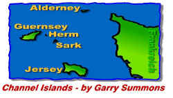

Die Schönen und Reichen werden von Inseln
scheinbar magisch angezogen. Der deutsche Jet-Set
tummelt sich auf Sylt, Mallorca wird selbst von
US-Schauspielern bevölkert, Ibiza ist die hippe
Trendhochburg für junge Millionäre und
Sardinien kommt auch langsam in Mode. In ist, wer
drin ist, oder so ähnlich. Seltsamerweise kann
man auf den Genannten noch nicht mal Steuern
sparen – ein wichtiges Kriterium aber bei der
Entscheidung, wo denn die Datscha hingehört.
Dabei kann es doch so einfach sein! Die
Kanalinseln, das Steuerparadies in Europa,
zwischen Frankreich und England gelegen, sollten
sich die Damen und Herren einmal ansehen.
Mediterranes Klima, französischer Lebensstil,
englisches Understatement – prima
Voraussetzungen also, um dem Fiskus zu entgehen
(Hallo Herr Eichel, hören Sie das?) und am
Lebensabend gemütlich im Ohrensessel zu sitzen
und an einem Keks zu knabbern.
 Wie
schon erwähnt liegen die drei wichtigsten Inseln
Jersey, Alderney und Guernsey auf halbem Weg
zwischen dem französischem Festland und Großbritannien.
Eigentlich dachte ich immer, daß die Kanalinseln
als Reiseziel relativ uninteressant seien, aber
ein Besuch im Reisebüro belehrte mich eines
Besseren. „Absolute Top-Buchungszahlen"
hieß es da. Auf die Frage, warum das so sei,
erhielt ich „Weil’s so warm ist". Tatsächlich
weht stets ein Passatwind über die Inseln und
sorgt somit für ununterbrochen schönes und
mildes Wetter. Ein weiterer Vorteil, den Reisende
auf die Kanalinseln anführen ist die ausgewogene
Mischung zwischen England und Frankreich.
Politisch gesehen gehören sie zwar zur
britischen Krone, aber man weiß nie so genau, in
welchem Land man sich eigentlich befindet. Da frühstückt
man auf der Strandpromenade in einem französischem
Bistro und kann eine Straßenecke weiter gleich
die typisch roten Telefonzellen entdecken, den
englischen Gentleman findet man ebenso wie französisches
Savoir vivre. Jetzt weiß ich wenigstens, wo ich
den nächsten Urlaub verbringe. Wie
schon erwähnt liegen die drei wichtigsten Inseln
Jersey, Alderney und Guernsey auf halbem Weg
zwischen dem französischem Festland und Großbritannien.
Eigentlich dachte ich immer, daß die Kanalinseln
als Reiseziel relativ uninteressant seien, aber
ein Besuch im Reisebüro belehrte mich eines
Besseren. „Absolute Top-Buchungszahlen"
hieß es da. Auf die Frage, warum das so sei,
erhielt ich „Weil’s so warm ist". Tatsächlich
weht stets ein Passatwind über die Inseln und
sorgt somit für ununterbrochen schönes und
mildes Wetter. Ein weiterer Vorteil, den Reisende
auf die Kanalinseln anführen ist die ausgewogene
Mischung zwischen England und Frankreich.
Politisch gesehen gehören sie zwar zur
britischen Krone, aber man weiß nie so genau, in
welchem Land man sich eigentlich befindet. Da frühstückt
man auf der Strandpromenade in einem französischem
Bistro und kann eine Straßenecke weiter gleich
die typisch roten Telefonzellen entdecken, den
englischen Gentleman findet man ebenso wie französisches
Savoir vivre. Jetzt weiß ich wenigstens, wo ich
den nächsten Urlaub verbringe.
 Und
damit man sich zumindest auf den fliegerischen
Aspekt schon mal eingewöhnen kann, hat Gary
Summons vor einigen Tagen die Kanalinseln für
den Flugsimulator erstellt. Und das hat er gut
gemacht. Und
damit man sich zumindest auf den fliegerischen
Aspekt schon mal eingewöhnen kann, hat Gary
Summons vor einigen Tagen die Kanalinseln für
den Flugsimulator erstellt. Und das hat er gut
gemacht.
Hauptaugenmerk wurde deutlich auf die Flughäfen
gerichtet, denn sie sind das detaillierteste, was
diese Szenerie zu bieten hat. Bemerkenswert ist,
daß Gary kein einziges FS Standardgebäude
eingebunden, sondern Wert auf
wirklichkeitsgetreue Darstellung gelegt hat.
Handgezeichnete Texturen verpassen den Terminals
und Hangars ein perfektes Make-up, die
Bodentexturen der Airports wirken, insbesondere
die Standplätze der Flugzeuge, wie in der
Wirklichkeit sehr verbraucht. Runway-Markings,
Taxilines, Marshaller, Zäune, Bäume,
Servicefahrzeuge, sich öffnende Hangartore –
ohne Übertreibung haben die Airports eindeutig
German Airports – Qualität.
 Besonders
schön wurde die „Größe" der Flugplätze
realisiert. Man findet keine Mega-Airports,
sondern charmante Regionalflughäfen. Deutlich
kann man das an Alderney sehen: außer einer
kleinen Abfertigungshütte und dem Tower steht da
nicht viel. Besonders
schön wurde die „Größe" der Flugplätze
realisiert. Man findet keine Mega-Airports,
sondern charmante Regionalflughäfen. Deutlich
kann man das an Alderney sehen: außer einer
kleinen Abfertigungshütte und dem Tower steht da
nicht viel.
Die Flughäfen der drei Inseln sind typische
„Regioprop-Airports", werden also in der
Wirklichkeit hauptsächlich von Turboprops
angeflogen. Gary Summons hat auch diesem Fakt
Rechnung getragen und noch eine Extra-Datei mit
einer Menge statischer Flugzeuge veröffentlicht,
die die Top-Szenerie nun perfekt abrundet.
 Leider
trüben einige Schönheitsfehler das Gesamtbild.
So ist die Insellandschaft platt wie ein
Pfannkuchen. Zwar hat Gary eine
Mesh-Terrain-Version veröffentlicht, die auch Hügel
und kleine Berge vorweisen kann, aber für die muß
man löhnen. Bedauerlicherweise konnte ich die
Payware-Version nicht betrachten, so daß ich
keine Empfehlung abgeben kann, ob sich ein Erwerb
lohnt. Leider
trüben einige Schönheitsfehler das Gesamtbild.
So ist die Insellandschaft platt wie ein
Pfannkuchen. Zwar hat Gary eine
Mesh-Terrain-Version veröffentlicht, die auch Hügel
und kleine Berge vorweisen kann, aber für die muß
man löhnen. Bedauerlicherweise konnte ich die
Payware-Version nicht betrachten, so daß ich
keine Empfehlung abgeben kann, ob sich ein Erwerb
lohnt.
Das Umfeld der Flughäfen wurde zwar
ansprechend texturiert, aber selbst in den Städten
fehlen jegliche 3D-Objekte. Nichtsdestotrotz wird
durch diese Wermutstropfen der Spielspaß in
keinster Weise behindert. Ein normaler Überflug
über die Kanalinseln reicht eigentlich nicht
aus, um die vielen Details zu entdecken, da muß
man schon mit der Schnellverstellung ran. Die
Framerate hält sich trotz der statischen Flieger
im angenehmen Bereich.
Interessant ist vielleicht noch, daß Gary
kontinuierlich an der Weiterentwicklung seiner
Szenerie arbeitet und daß er bereits am
UK2000-Projekt sitzt, das Großbritannien in der
hier vorliegenden Qualität komplett abdecken
soll – logisch, daß er dafür ein paar Mark
sehen will. Man darf gespannt sein, was dieser
talentierte Bursche aufstellt – mit den
Kanalinseln hat mehr als einen Achtungserfolg
erzielen können!


Felix Dudek
FelixDudek@aol.com
07.September 1999
|
INFORMATION
|
DATEIEN
|
|
AUTOR: GARY
SUMMONS HOMEPAGE
FREEWARE
TEST SYSTEM: PII 400MHZ, 128MB RAM, RIVA128 AGP/8MB
RAM
|
|
|


{kind=link}
{kind=link}